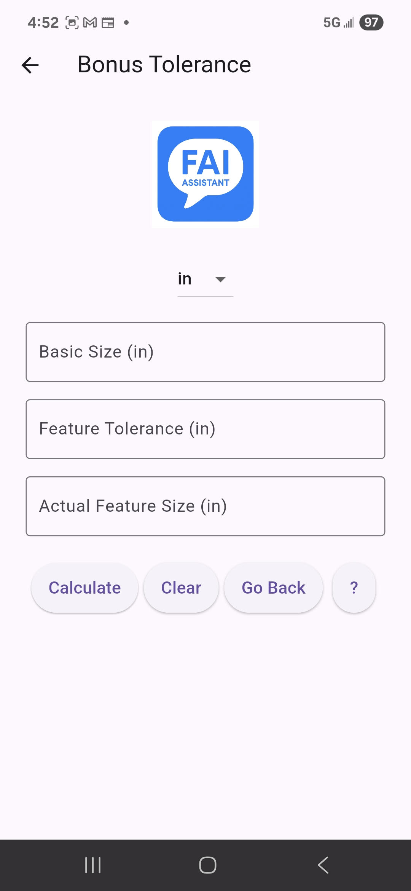
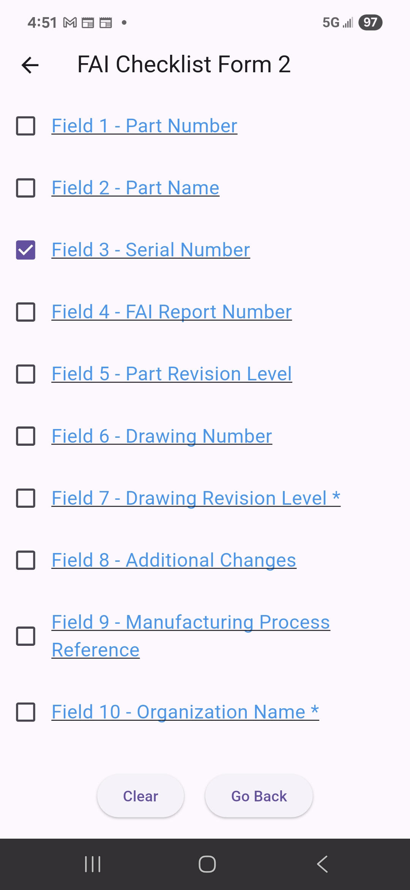
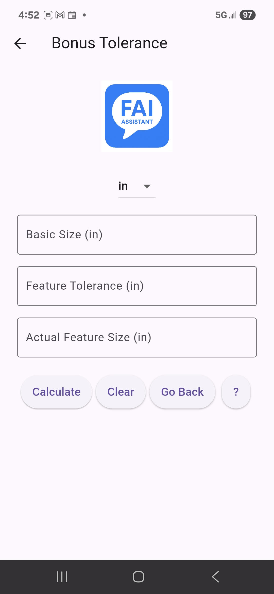
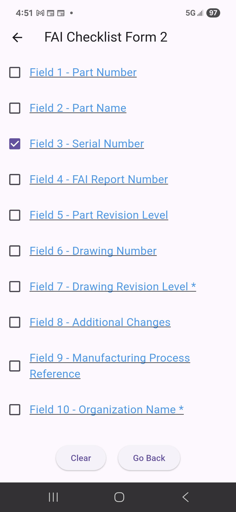

FAI Assistant
Educational App for AS9102 First Article Inspections
Currently in development – launching soon for iOS and Android
Educational App for AS9102 First Article Inspections
Currently in development – launching soon for iOS and Android
FAI Assistant is a mobile app designed to help aerospace suppliers and quality professionals correctly complete AS9102 First Article Inspection forms.
The app guides users through each required field, explains common mistakes, and offers step-by-step instructions and examples — making the FAI process more accurate and efficient.
The app is in active development and not yet available for download. We are working closely with industry standards to ensure full compliance and maximum value for users.
Users will be able to purchase AS9102 Rev C directly from SAE International and then access the PDF from within the app.
FAI Assistant does not store, sell, or distribute AS9102 — it simply helps users apply it correctly.

 


